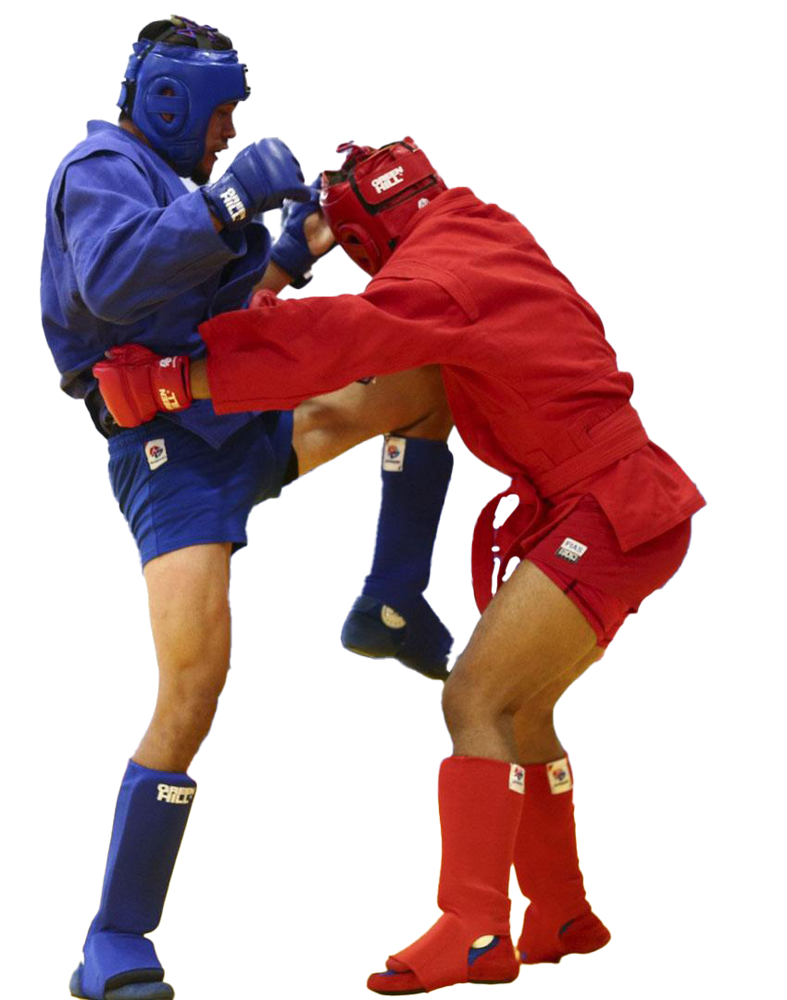

<div class="container">
  <div class="info">
    <h1>საქართველოს სამბოს ფედერაცია</h1>
    <p class="first">
      2022 წლის დაწყებამდე ერთი კვირით ადრე ქართველი სამბისტები იბრძოდნენ
      საერთაშორისო შეჯიბრებებში საკუთარი ქვეყნის წარმოდგენის უფლებისთვის. 2021
      წლის 24-დან 25 დეკემბრის ჩათვლით თბილისში გაიმართა საქართველოს ჩემპიონატი
      სამბოში.
    </p>
    <p class="second">
      საქართველოს სამბოს ეროვნული ფედერაციის მიერ ორგანიზებულ ტურნირს 190
      ესწრებოდა, მათ შორის ევროპისა და მსოფლიოს ჩემპიონები. ჩემპიონატის
      შედეგებით შეიქმნა გუნდი, რომელიც 2022 წელს საერთაშორისო შეჯიბრებებში
      მიიღებს მონაწილეობას.
    </p>
  </div>

  
</div>
